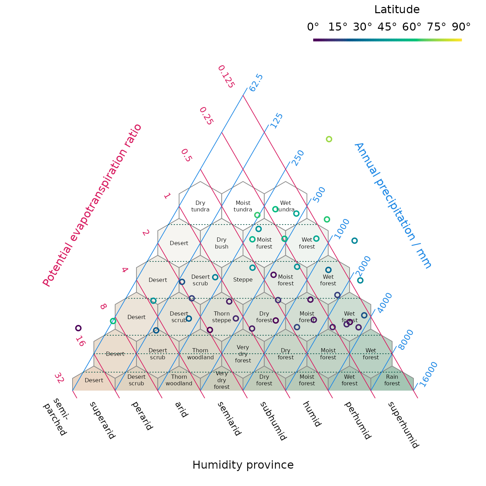

HoldridgePlot() creates a blank triangular plot, as
proposed by Holdridge (1947, 1967), onto which potential
evapotranspiration (PET) ratio and annual precipitation data can be
plotted (using the AddToHoldridge() family of functions) in
order to interpret climatic life zones.
HoldridgePoints(), HoldridgeText() and
related functions allow data points to be added to an existing plot;
AddToHoldridge() allows plotting using any of the standard
plotting functions.
HoldridgeBelts() and HoldridgeHexagons()
plot interpretative lines and hexagons allowing plotted data to be
linked to interpreted climate settings.
Please cite Tsakalos et al. (2023) when using this function.
# Install the Ternary package, if it's not already installed
if (!requireNamespace("Ternary", quietly = TRUE)) {
install.packages("Ternary")
}
# Load the Ternary package
library("Ternary")
# Load some example data from the Ternary package
data(holdridge, holdridgeLifeZonesUp, package = "Ternary")
# Suppress plot margins
par(mar = c(0, 0, 0, 0))
# Create blank Holdridge plot
HoldridgePlot(hex.labels = holdridgeLifeZonesUp)
HoldridgeBelts()
# Plot data, shaded by latitude
HoldridgePoints(holdridge$PET, holdridge$Precipitation,
col = hcl.colors(91)[abs(holdridge$Latitude) + 1],
lwd = 2)
# Add legend to interpret shading
PlotTools::SpectrumLegend(
"topright", bty = "n", # No box
horiz = TRUE, # Horizontal
x.intersp = -0.5, # Squeeze in X direction
legend = paste0(seq(0, 90, 15), "°"),
palette = hcl.colors(91),
title = "Latitude"
)
The next step is to try plotting your own data. There are many online tutorials for loading data in a variety of formats into R. Two of the most common cases are:
# On first use only, install the 'readxl' package
install.packages("readxl")
# Load data into an object called `myData`
myData <- readxl::read_excel("path_to/your_excel_file.xlsx")
# View the loaded data
View(myData)
# View manual page for `read_excel` function, with details for advanced use
?read_excel.csv:
# Read data into an object called `myData`
myData <- read.csv("path_to/your_data_file.csv")
# View the loaded data
View(myData)
# For more flexibility - for instance for tab-separated data - see:
?read.table
# Read data from a tab-separated file with a header row
myData <- read.table("path_to/your_data_file.txt", sep = "\t", header = TRUE)
View(myData)Once your data are within R, you need to select the values for the potential evapotranspiration ratio (pet) and annual precipitation (in mm).
If your PET data are in the third row of myData, you can
call:
myPet <- myData[3, ] # Access row number 3. Note the position of the comma.If your precipitation data is in a column with the heading “Prec”, you can call:
myPrec <- myData[, "Prec"] # Access column with name "Prec".
# Columns go after the comma.This will allow you to plot your data using:
HoldridgePlot()
HoldridgePoints(pet = myPet, prec = myPrec)Details of how to customize Holdridge plots are given on the relevant manual pages.
See:
Holdridge (1947), “Determination of world plant formations from simple climatic data”, Science 105:367–368.
Holdridge (1967), Life zone ecology. Tropical Science Center, San José.
Tsakalos, Smith, Luebert & Mucina (2023). “climenv: Download, extract and visualise climatic and elevation data.”, Journal of Vegetation Science 6:e13215.